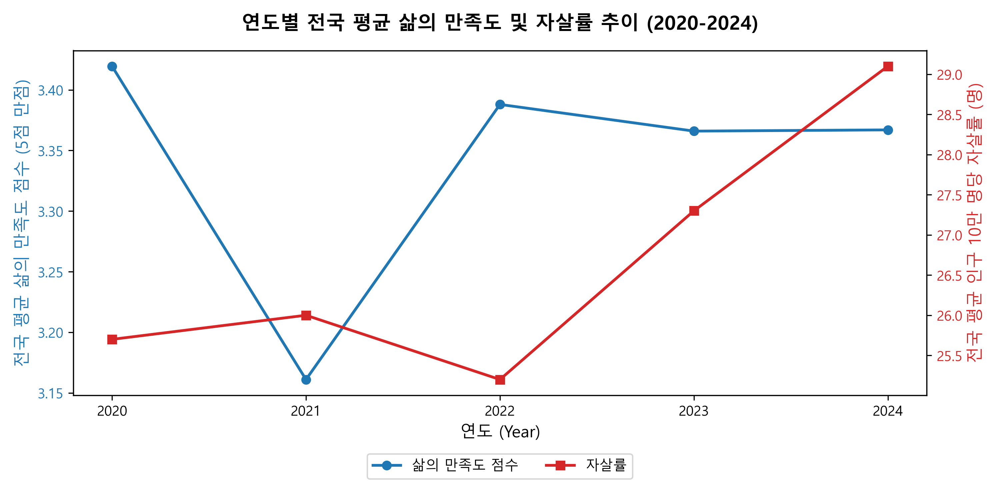
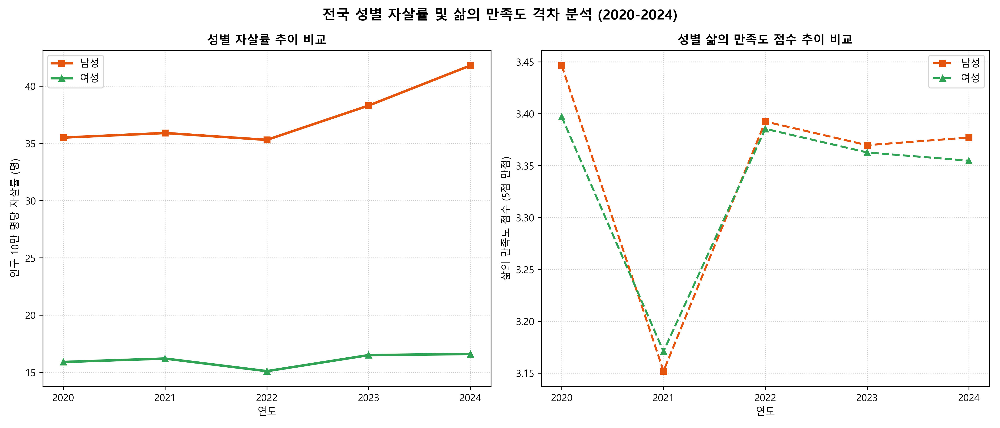
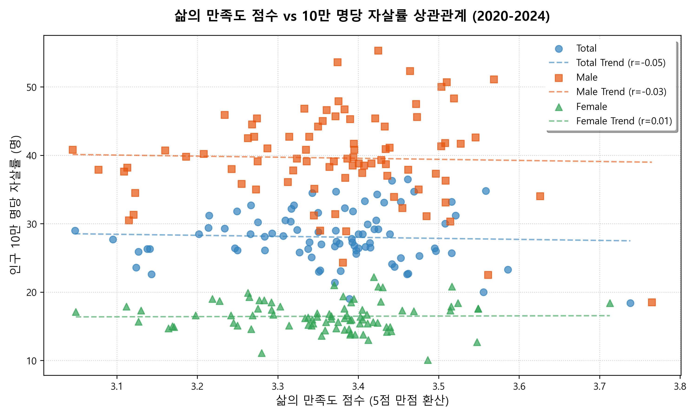
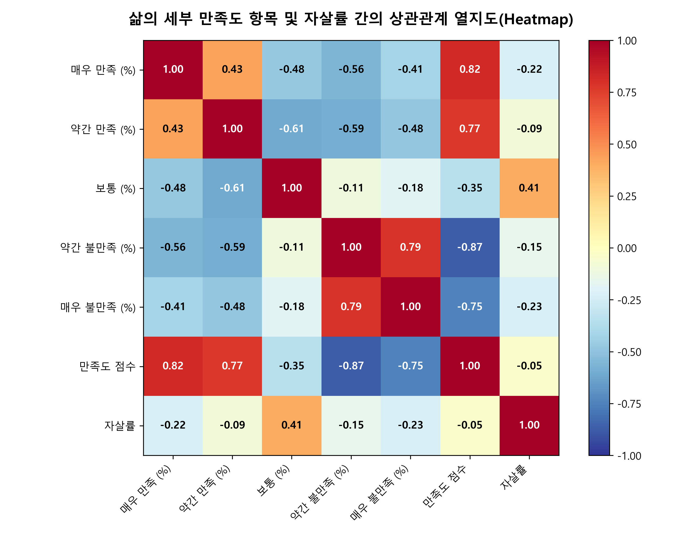
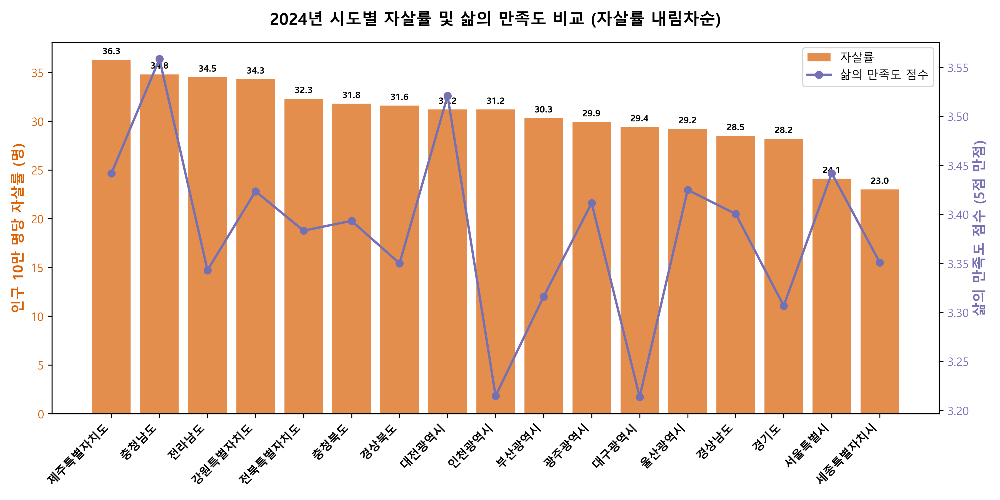
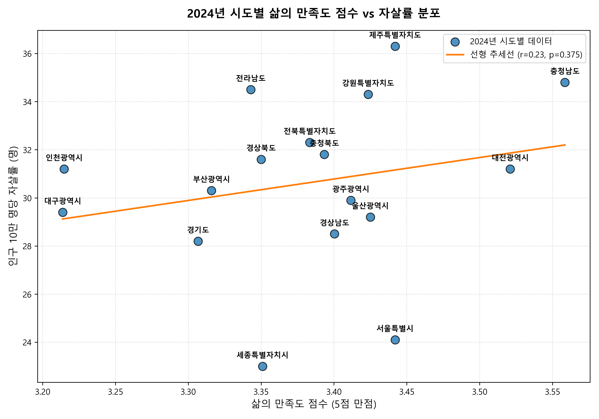

보고서 요약 (Executive Summary)
- 상관관계의 비유의성 (전체 통합): 5개년 전체 시도 데이터를 통합 분석한 결과, 주관적 만족도 점수와 자살률 간의 단순 선형 상관관계는 통계적 유의성이 낮은 것으로 조사되었습니다.
- 코로나19 시기(2020년)의 음의 상관관계: 팬데믹 초기인 2020년에는 만족도가 높은 지역일수록 자살률이 낮아지는 뚜렷한 음(-)의 상관관계(Pearson r = -0.50)가 성립하였으나, 이후 포스트 코로나 시기로 접어들며 이 관계가 약화/해체되었습니다.
- 보통(Neutral) 응답의 양의 상관성 (+0.41): 만족도 세부 항목을 추적한 결과, 감정 표현을 보류한 '보통'의 비율이 높은 지역일수록 자살률이 증가하는 의외의 양의 상관성이 발견되어, 지역 사회 내 무색무취한 무관심 지대 발굴이 중요함이 시사됩니다.
- 만족도-자살률의 역설 (Daly's Paradox): 2024년 기준 주관적 삶의 만족도가 전국 최상위인 충청남도(1위)와 제주특별자치도(공동 3위)의 자살률이 각각 2위와 1위를 달성하는 등 행복한 지역의 자살 역설이 강하게 나타납니다.
데이터셋 정보
분석에 활용된 정보는 국가통계포털(KOSIS)의 두 가지 신뢰성 있는 원천 자료를 병합한 것입니다.
- 삶의 만족도 데이터: 국가데이터처 사회통계기획과 「사회조사」 기반의 주관적 정서 지표
- 자살률 데이터: 국가데이터처 인구동향과 「사망원인통계」 기반의 인구 10만 명당 자살자 수
분석 방법론 및 점수 환산
삶의 만족도를 종합적인 하나의 지수로 계량화하기 위해, 설문 항목의 5단계 답변 비중에 가중치를 적용한 삶의 만족도 점수(Satisfaction Score)를 계산했습니다.
만족도 점수 = [ (매우만족*5) + (약간만족*4) + (보통*3) + (약간불만*2) + (매우불만*1) ] / 100
전국 평균 시계열 추이 (2020 ~ 2024)
전국 데이터를 통합하여 연도별 삶의 만족도 점수와 자살률의 비동조화 현상을 추적합니다. 표의 각 행을 클릭해 추세를 비교할 수 있습니다.
| 성별 | 연도 | 만족 비율 (%) | 불만족 비율 (%) | 만족도 점수 | 10만 명당 자살률 (명) |
|---|---|---|---|---|---|
| 전체 | 2020 | 42.7% | 12.5% | 3.42 | 25.7 |
| 전체 | 2021 | 34.0% | 22.9% | 3.16 | 26.0 |
| 전체 | 2022 | 43.3% | 14.1% | 3.39 | 25.2 |
| 전체 | 2023 | 42.2% | 14.5% | 3.36 | 27.3 |
| 전체 | 2024 | 40.1% | 12.7% | 3.37 | 29.1 |
| 남성 | 2020 | 43.5% | 11.8% | 3.45 | 35.5 |
| 남성 | 2021 | 33.8% | 23.5% | 3.15 | 35.9 |
| 남성 | 2022 | 43.4% | 14.1% | 3.39 | 35.3 |
| 남성 | 2023 | 42.5% | 14.6% | 3.37 | 38.3 |
| 남성 | 2024 | 40.5% | 12.4% | 3.38 | 41.8 |
| 여성 | 2020 | 41.9% | 13.0% | 3.40 | 15.9 |
| 여성 | 2021 | 34.3% | 22.4% | 3.17 | 16.2 |
| 여성 | 2022 | 43.2% | 14.0% | 3.39 | 15.1 |
| 여성 | 2023 | 42.0% | 14.5% | 3.36 | 16.5 |
| 여성 | 2024 | 39.7% | 13.1% | 3.35 | 16.6 |
시각화 1: 연도별 전국 평균 추이

시각화 2: 성별 격차 비교

통합 데이터 및 단년도 상관관계 분석
전국을 제외한 17개 시도별 매칭 데이터를 분석한 계수 통계 테이블입니다.
표 2. 통합 데이터 상관관계 (N = 85)
| 분석 대상 성별 | 독립 변수 (X) | 피어슨 계수 (r) | 피어슨 p-value | 스피어먼 계수 (ρ) | 스피어먼 p-value |
|---|---|---|---|---|---|
| 전체 (Total) | 만족 비율 (%) | -0.1704 | 0.119 (미유의) | -0.1359 | 0.215 |
| 전체 (Total) | 불만족 비율 (%) | -0.1767 | 0.106 (미유의) | -0.1685 | 0.123 |
| 전체 (Total) | 만족도 점수 | -0.0452 | 0.681 (미유의) | -0.0192 | 0.861 |
| 남성 (Male) | 만족도 점수 | -0.0304 | 0.782 (미유의) | 0.0391 | 0.723 |
| 여성 (Female) | 만족도 점수 | 0.0136 | 0.901 (미유의) | -0.0180 | 0.870 |
표 3. 연도별 단년도 상관관계 (성별: 전체, 각 N = 17)
| 분석 연도 | 독립 변수 (X) | 피어슨 계수 (r) | 피어슨 p-value | 스피어먼 계수 (ρ) | 스피어먼 p-value |
|---|---|---|---|---|---|
| 2020년 | 만족도 점수 | -0.5036 | 0.0393 (유의) | -0.4020 | 0.110 |
| 2020년 | 만족 비율 (%) | -0.5226 | 0.0314 (유의) | -0.3775 | 0.135 |
| 2021년 | 만족도 점수 | 0.0517 | 0.844 (미유의) | 0.2466 | 0.340 |
| 2022년 | 만족도 점수 | 0.0785 | 0.765 (미유의) | -0.1128 | 0.666 |
| 2023년 | 만족도 점수 | -0.1120 | 0.669 (미유의) | 0.0454 | 0.863 |
| 2024년 | 만족도 점수 | 0.2299 | 0.375 (미유의) | 0.2232 | 0.389 |
시각화 3: 전체 통합 산점도 및 선형 추세

시각화 4: 세부 설문 항목별 상관관계 열지도

2024년 시도별 자살률과 만족도의 역설 (The Satisfaction Paradox)
아래 테이블은 2024년 17개 시도별 상세 설문 비율과 자살률 데이터입니다. 헤더를 클릭하면 각 지표를 기준으로 오름차순/내림차순 정렬할 수 있으며, 검색바를 통해 시도를 빠르게 필터링할 수 있습니다.
| 순위 (자살률) | 행정구역 | 만족도 점수 | 매우 만족 (%) | 약간 만족 (%) | 보통 (%) | 약간 불만족 (%) | 매우 불만족 (%) | 자살률 (명) |
|---|---|---|---|---|---|---|---|---|
| 1 | 제주특별자치도 | 3.44 | 12.8% | 30.6% | 46.4% | 8.4% | 1.8% | 36.3 |
| 2 | 충청남도 | 3.56 | 16.3% | 30.7% | 46.7% | 4.9% | 1.3% | 34.8 |
| 3 | 전라남도 | 3.34 | 10.3% | 29.9% | 45.4% | 12.6% | 1.8% | 34.5 |
| 4 | 강원특별자치도 | 3.42 | 12.1% | 30.1% | 47.7% | 8.5% | 1.7% | 34.3 |
| 5 | 전북특별자치도 | 3.38 | 10.6% | 34.2% | 41.0% | 11.1% | 3.0% | 32.3 |
| 6 | 충청북도 | 3.39 | 13.0% | 27.7% | 47.0% | 10.0% | 2.2% | 31.8 |
| 7 | 경상북도 | 3.35 | 9.2% | 31.7% | 46.2% | 10.7% | 2.2% | 31.6 |
| 8 | 대전광역시 | 3.52 | 16.0% | 31.2% | 43.2% | 8.1% | 1.5% | 31.2 |
| 8 | 인천광역시 | 3.21 | 9.5% | 18.5% | 58.3% | 11.6% | 2.2% | 31.2 |
| 10 | 부산광역시 | 3.32 | 12.1% | 25.4% | 47.5% | 12.0% | 3.0% | 30.3 |
| 11 | 광주광역시 | 3.41 | 13.2% | 27.5% | 48.6% | 8.9% | 1.9% | 29.9 |
| 12 | 대구광역시 | 3.21 | 9.2% | 26.9% | 42.6% | 18.9% | 2.5% | 29.4 |
| 13 | 울산광역시 | 3.43 | 13.4% | 27.2% | 49.6% | 8.1% | 1.7% | 29.2 |
| 14 | 경상남도 | 3.40 | 10.4% | 32.5% | 45.2% | 10.3% | 1.5% | 28.5 |
| 15 | 경기도 | 3.31 | 10.3% | 25.4% | 51.4% | 10.7% | 2.3% | 28.2 |
| 16 | 서울특별시 | 3.44 | 12.4% | 33.9% | 41.8% | 9.3% | 2.6% | 24.1 |
| 17 | 세종특별자치시 | 3.35 | 16.5% | 26.3% | 36.4% | 17.4% | 3.4% | 23.0 |
시각화 5: 시도별 자살률 및 만족도 비교 (대조 그래프)

시각화 6: 2024년 시도별 삶의 만족도 vs 자살률 분포 (좌표평면)

역설의 사회학적 배경 해석
지역 단위의 만족도가 높아도 자살 통계가 가중될 수 있는 인과적 원인은 크게 세 가지로 종합할 수 있습니다.
- 인구 구조 및 생태학적 오류: 도(道) 지역은 취약 독거 노인의 편중으로 평균 자살률이 치솟는 구조이나, 가구 표본 중심 사회조사는 주류 연령대나 경제 활동 인구의 양호한 만족감을 위주로 표현하므로 노인 소외층의 절망이 미수집되는 지표 편향이 있습니다.
- 사회적 비교 이론: 거주 환경이 좋고 타인의 삶의 만족도가 높은 환경에 놓여 있을 때, 개인의 우울 정서는 주변과의 심리적 비교로 인해 박탈감이 훨씬 뼈아프게 작용할 수 있습니다.
- '보통(Neutral)' 감정의 역설: 만족도 설문에서 감정을 직접 진술하지 않고 유보하는 비율이 높은 지역일수록 방치된 취약계층 발굴이 더디고 사회적 관계망의 단절로 실제 자살 예방 활동 및 조기 개입이 부실할 확률이 큽니다.
보고서 퀵 이해도 체크
분석 보고서에서 밝혀낸 '삶의 만족도' 세부 지표 중 자살률과 가장 높은 양(+)의 선형 상관성(0.41)을 보였던 감정 응답 항목은 무엇일까요?
정책적 제언 (Recommendations)
- 정신건강 리스크 정책 지표 고도화: 지역별 계획을 세울 때 삶의 만족도 서베이 단독 활용을 철저히 배제하고, 독거노인 인구 비율, 취약가구 밀도 등의 다차원 정량 데이터를 병합한 정신건강 종합 리스크 인덱스를 도입해야 합니다.
- 무감정·무색무취 계층(보통 응답자) 집중 발굴: 만족이나 불만을 명확히 소리 내어 표하지 않고 '보통'을 체크하며 복지 안전망 뒤편에 방치되어 고립되고 있는 잠재적 우울가구 탐지 프로그램을 마련해야 합니다.
- 성별 및 농어촌 노인 복지 인프라 강화: 노인 인구가 높은 도(道) 지역(충남, 제주, 전남 등)의 정신건강 긴급 구호 인프라를 대폭 늘리고, 여성 대비 만족도는 유사하나 자살률이 2.5배 가량 극단적으로 높은 남성 인구의 경제적 고립과 정서 문제를 표적 치료할 수 있는 남성 타겟 프로그램 구축이 절실합니다.